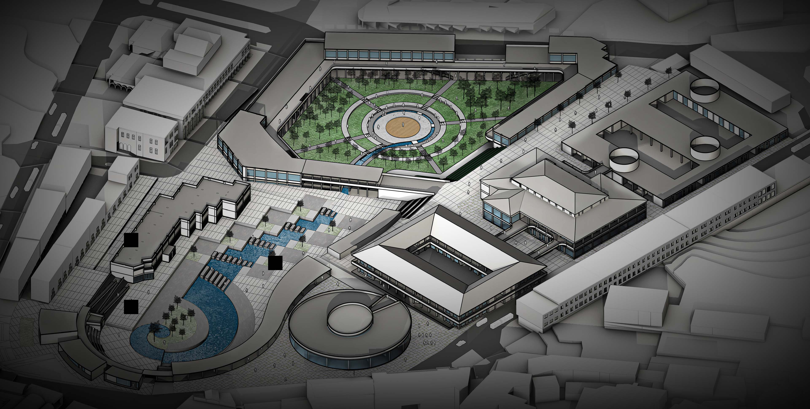
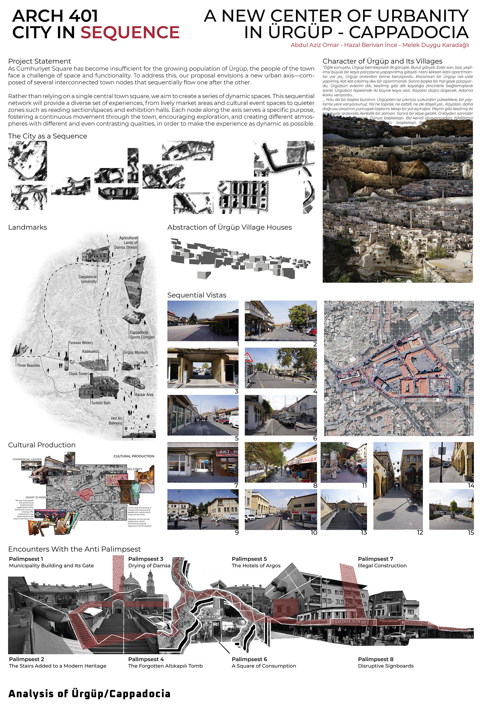
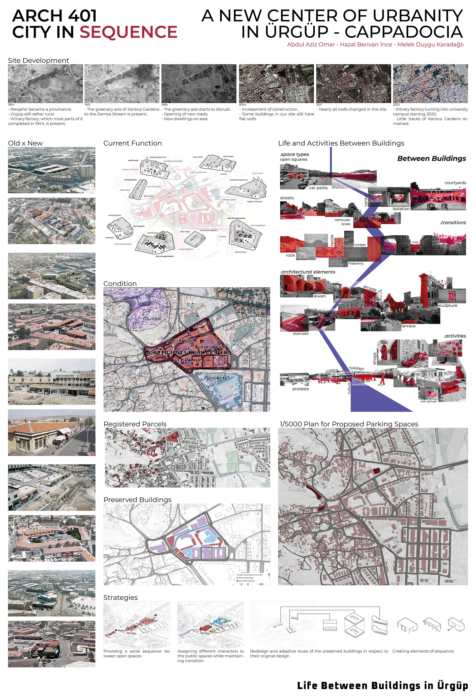
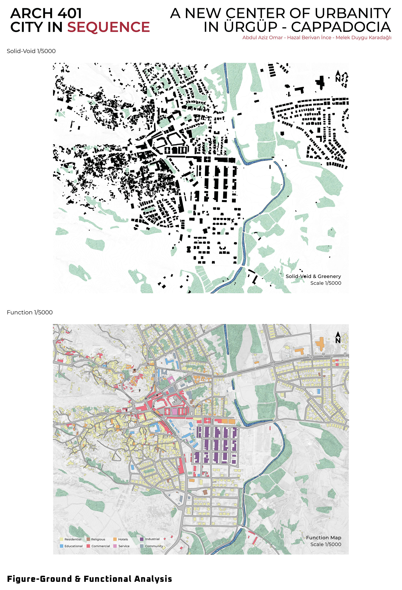
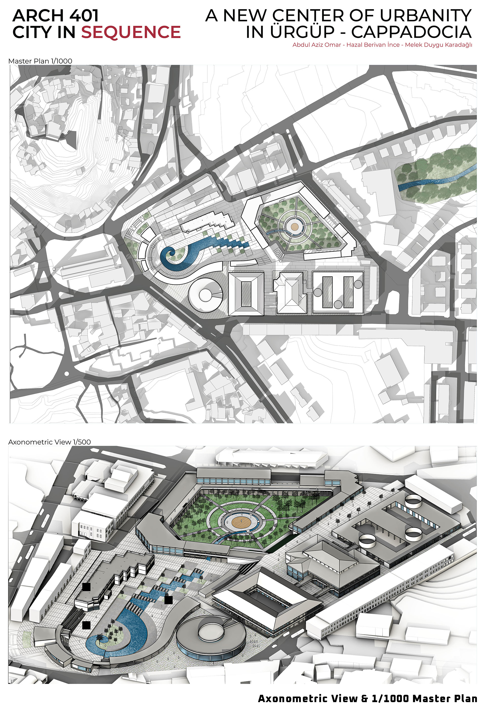
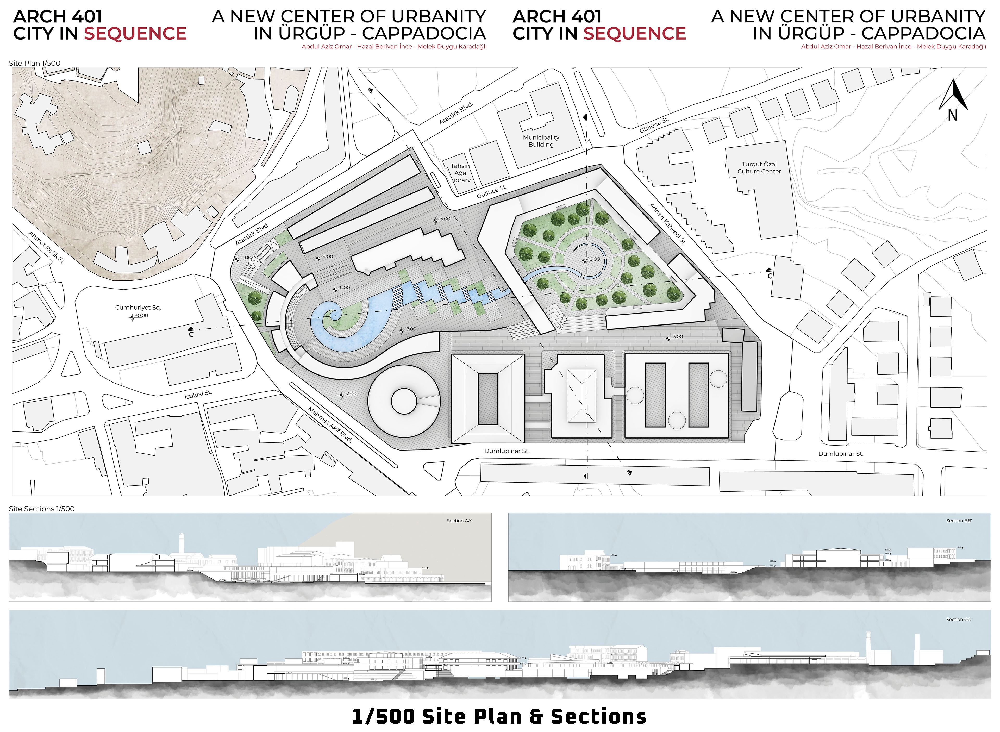
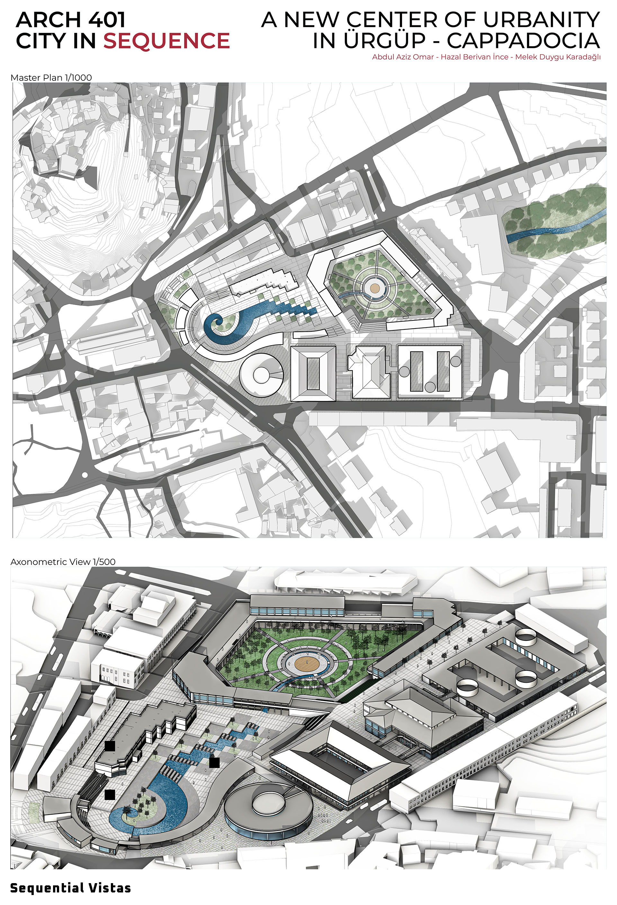
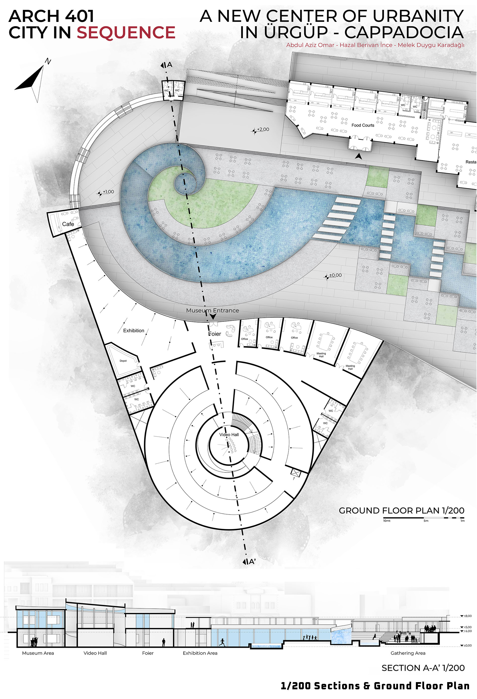

City in Sequence

ABOUT THE PROJECT
Ürgüp's growing population outpaces the capacity of Cumhuriyet Square, our proposal reimagines the urban core through a new axis of interconnected town nodes. Instead of relying on a single central square, this sequential network of dynamic spaces offers diverse functions and experiences, from bustling markets and cultural hubs to tranquil student zones and artisan workshops.






